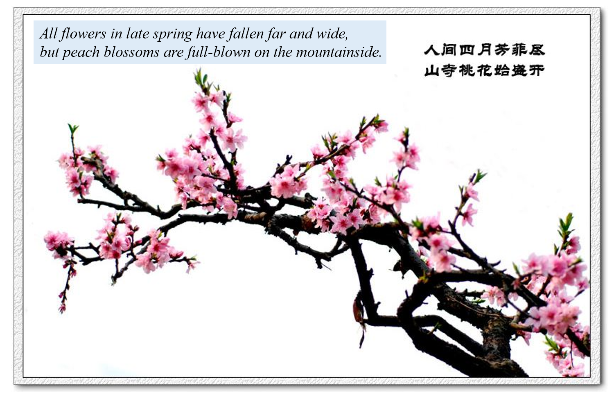

BEST Network
“..that grand subject, that almost keystone of the
laws of creation, Geographical Distribution” — Charles
Darwin, in a letter to Joseph Dalton Hooker, 1845
“地理分布这个伟大的主题几乎是一块生命规律之基石” — 达尔文1845年在给虎克的一封信

Why Mountains Matter?


Why Mountains Matter for Biodiversity?
Humboldt’s climb of Chimborazo in the
Andes Mountains in present-day Ecuador resulted in this map of
vegetation change in relation to elevation, published in 1807 in the
seminal book Essay on the Geography of Plants
“Elevational gradients can serve as
natural experiments for studies on community and ecosystem processes to
long-term changes in climate and as test beds for models about the
future of biodiversity in a changing world” — Sundqvist,
Sanders, & Wardle (2013)

Why Mountains in China?
{kind=link}
China harbours over 35,000 higher plant species, and over 2,700 terrestrial vertebrate species, with a high proportion of endemic species. In general, biodiversity in China is much higher than in any other country covering similar latitudes. Among the 36 global biodiversity hotspots, the “Mountains of Southwest China” hotspot lies almost entirely (> 98% in area), and the “Himalaya” (33%), “Mountains of Central Asia” (29%), and “Indo-Burma” (15%) hotspots lie partly within China.
About the BEST
Inspired by the early works in elevational gradients, we initialed a regional research network BEST (Biodiversity along Elevational gradients: Shifts and Transitions) in 2017, to monitor long-term biodiversity dynamics of multiple taxa (e.g., vascular plants, mosses, soil microbes, and birds) under climate change and land use. Microclimates (temperature and moisture of air and soil) are measured and served as one key element to understand community dynamics across space and time. Some new technologies, such as drones and bioacoustic audio recorders, also plan to use for the monitoring. By collaborating with over 15 research teams with different backgrounds, we have set up 15 elevational transects across a large research area mainly in subtropical and tropical forest region of China.